El Portal de procesos es el sistema de Century Mold para pedir tiempo extra y transporte. Recursos Humanos es el último paso de cada solicitud y quien cuida a los usuarios del portal.
Así camina una solicitud, y dónde entras tú:
Quien la pide la captura y la envía.
El jefe de su área (Autorización 1) la firma o la devuelve.
Autorización 2 da la segunda firma.
Tú la confirmas en Por enviar al proveedor: se crea su solicitud de transporte.
El Formato de rutas (Excel) se baja y se manda al proveedor.
Además de lo del tiempo extra, tú administras usuarios y accesos: das de alta a las personas, les asignas sus roles y restableces contraseñas.
2. Primeros pasos
Entrar al portal
Abre https://centurymold-qro.web.app en tu navegador (Chrome, Edge o el de tu celular).
Escribe tu número de nómina.
Escribe tu contraseña. El ojito sirve para ver lo que escribes.
Toca Iniciar sesión.
Si no la recuerdas, toca ¿Olvidaste tu contraseña?.
Tu pantalla de inicio
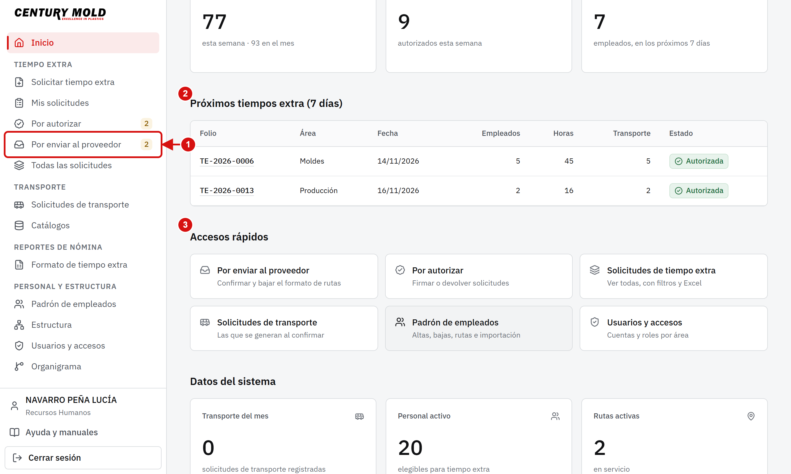
En Accesos rápidos y en el menú está Por enviar al proveedor, con su contador.
En Requieren atención aparece lo que espera algo de ti (por ejemplo, solicitudes por confirmar o por vencer).
Más abajo ves Accesos rápidos a las demás pantallas.
En el pie del menú están Ayuda y manuales (este manual y su guía rápida en PDF) y Cerrar sesión. En una computadora compartida, cierra tu sesión al terminar.
3. Confirmar el tiempo extra autorizado
En Por enviar al proveedor están las solicitudes que ya tienen las dos autorizaciones. Las de la fecha más próxima salen primero, agrupadas por día.
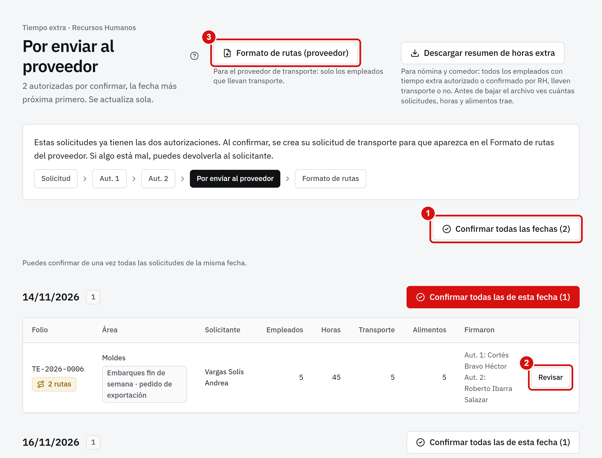
Confirmar todas las fechas confirma todo de una vez. Cada fecha también tiene su propio botón Confirmar todas las de esta fecha.
Revisar abre la solicitud: ahí puedes devolverla (con un motivo de al menos 10 letras) o cancelarla.
Formato de rutas (proveedor) baja el Excel (siguiente sección).
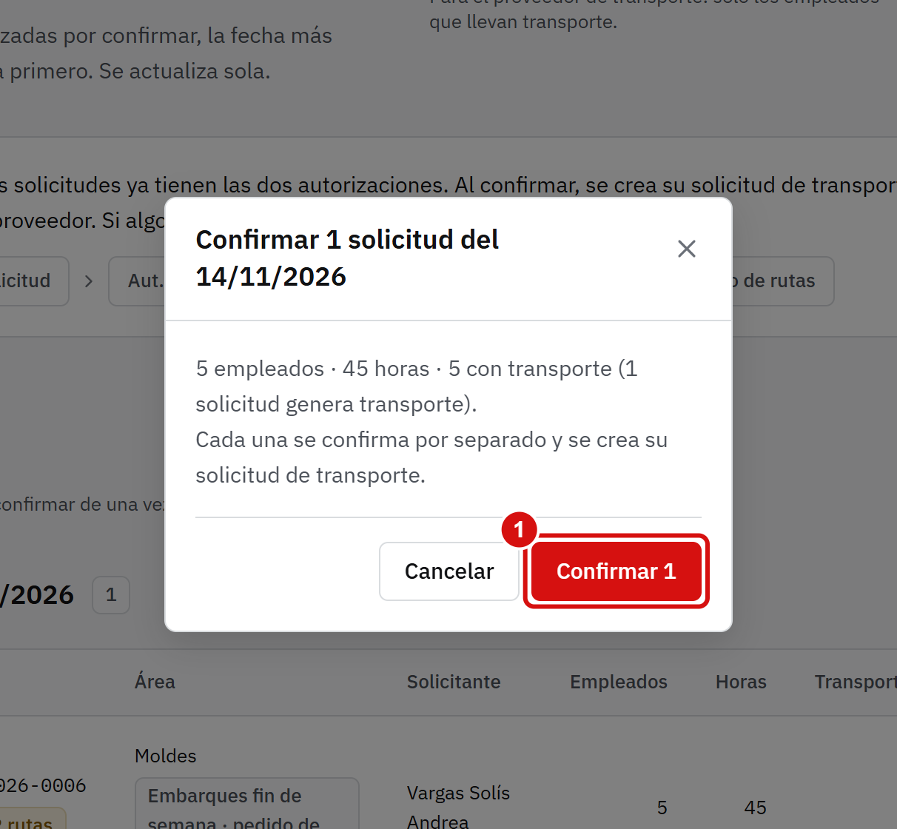
El portal te muestra el total de empleados, horas y transporte y te pide confirmar. Toca el botón para terminar.
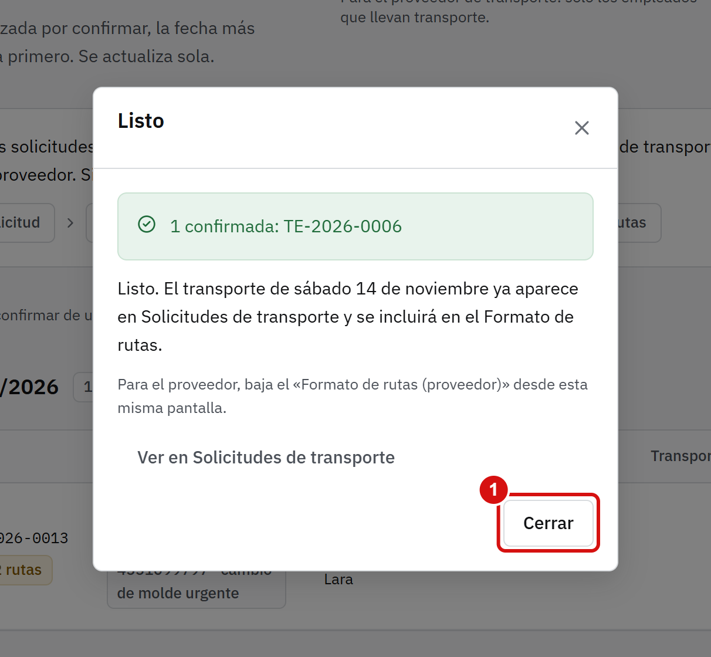
Al terminar dice «Listo». Cada solicitud con transporte ya tiene su solicitud de transporte, que aparece en el Formato de rutas.
Si la fecha del tiempo extra ya pasó y no se mandó al proveedor, el portal ya no crea transporte: usa Cerrar sin transporte. Sus horas siguen contando para nómina.
4. Bajar el Formato de rutas
Es el Excel para el proveedor de transporte: solo lleva a los empleados que van en transporte, con su ruta, su punto de reunión y su horario.
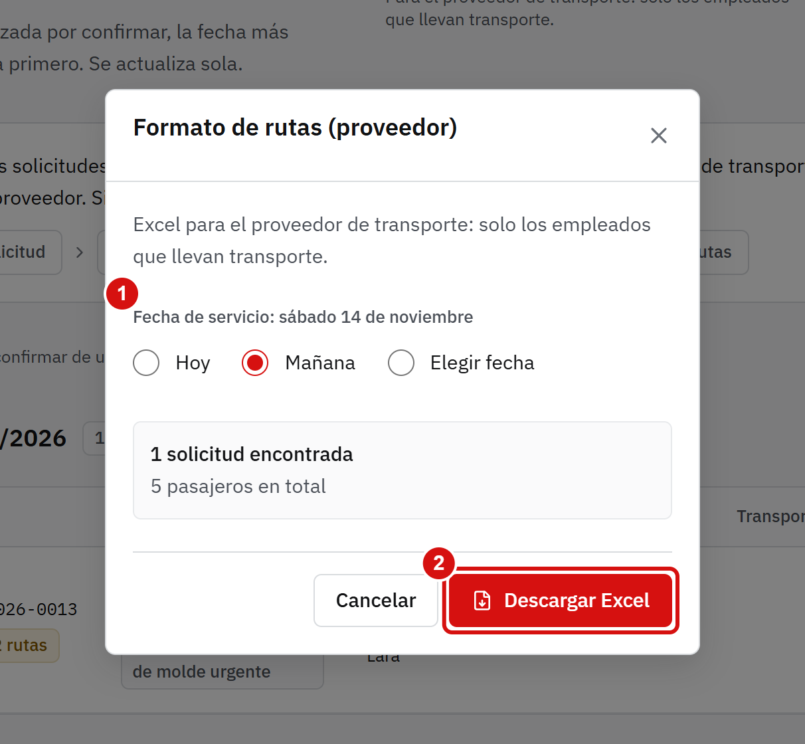
Toca Formato de rutas (proveedor) (en Por enviar al proveedor o en el menú).
Elige la fecha de servicio: hoy, mañana, o una fecha o rango. Arriba te dice cuál es.
Toca Descargar Excel. El archivo se llama Transporte_AAAA-MM-DD.xlsx.
Al terminar, el cuadro te dice qué archivo se descargó y cuántas solicitudes y pasajeros lleva. Ábrelo desde el ícono de descargas del navegador o en la carpeta Descargas de tu computadora.
Si dice «No hay tiempo extra confirmado para esa fecha», primero confirma en Por enviar al proveedor (el botón del propio mensaje te lleva). El Excel solo lleva lo ya confirmado.
5. Crear un usuario
Cada persona entra con su número de nómina. Antes de crear un usuario, la persona debe estar en el padrón de empleados.
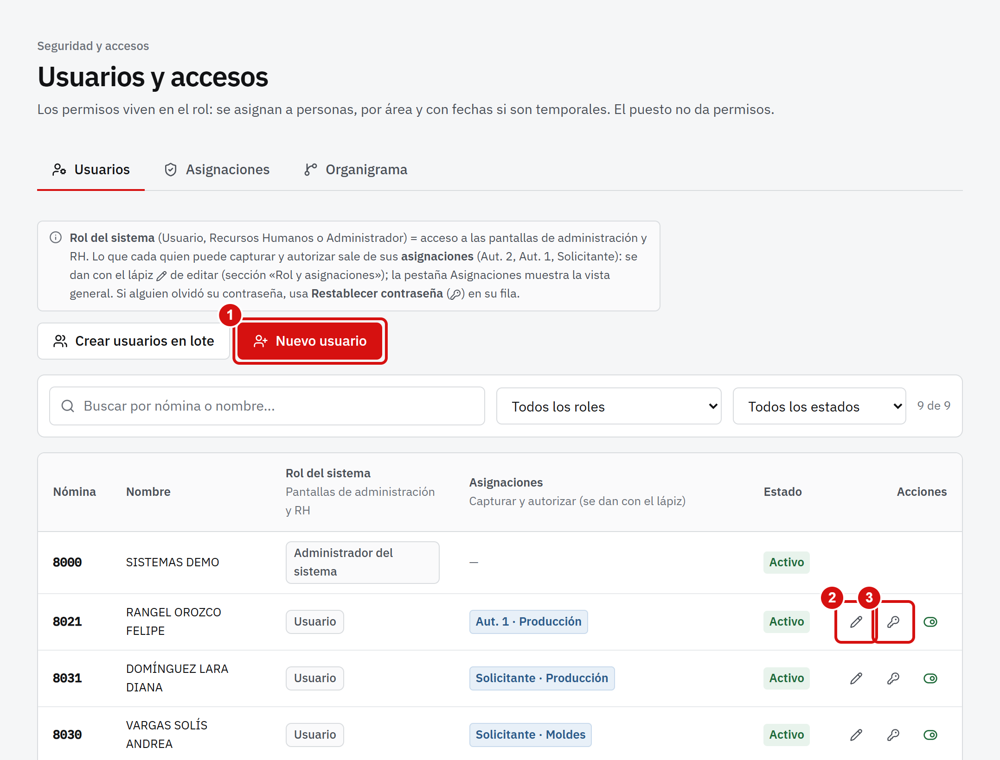
Entra a Personal › Usuarios y accesos. La lista muestra el rol del sistema y las asignaciones de cada quien.
Toca Nuevo usuario (o Crear usuarios en lote para varios a la vez).
El lápiz ✎ edita a una persona; la llave 🔑 restablece su contraseña.
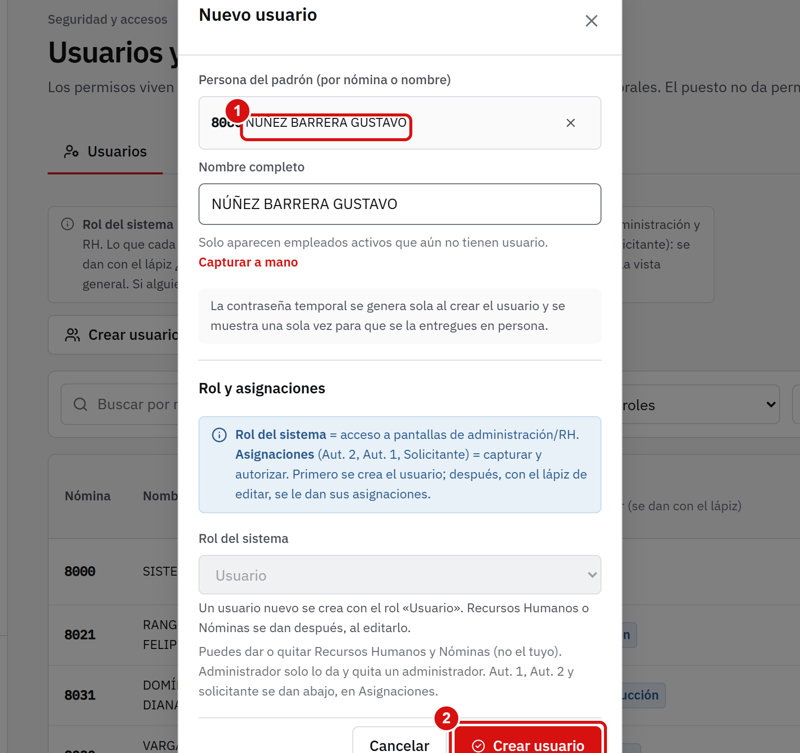
Busca a la persona por nómina o nombre y elígela. Solo salen empleados activos que aún no tienen usuario.
Toca Crear usuario.
El usuario nuevo se crea con el rol Usuario. La contraseña temporal la genera el portal sola y se muestra una sola vez:
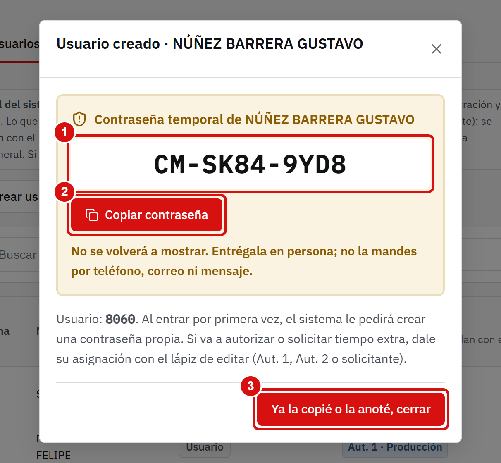
Es la contraseña temporal de esa persona.
Toca Copiar contraseña, o anótala.
Cuando ya la copiaste o la anotaste, toca Ya la copié o la anoté, cerrar.
Entrégala en persona. No la mandes por teléfono, correo ni mensaje. La persona deberá crear una contraseña propia al entrar por primera vez.
6. Dar roles y restablecer contraseñas
Dar un rol
El rol del sistema (Usuario, Recursos Humanos, Nóminas) abre pantallas de administración. Lo que cada quien puede capturar y autorizar sale de sus asignaciones: Autorizador 1 o solicitante de un área, con fechas si es temporal.
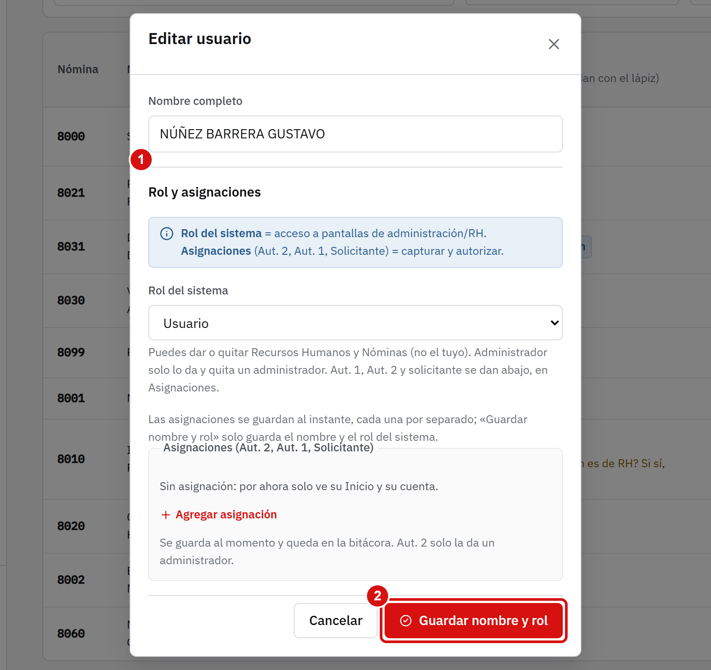
Con el lápiz ✎ de la persona, baja a Rol y asignaciones.
Agrega la asignación (rol, área y fechas). Se guarda al instante; el botón de abajo solo guarda el nombre y el rol del sistema.
Tú puedes dar Autorizador 1 y solicitante, y el rol del sistema Recursos Humanos y Nóminas. Autorización 2 y Administrador solo los da el administrador. Nadie cambia su propio rol ni se da Nóminas a sí mismo.
Restablecer una contraseña
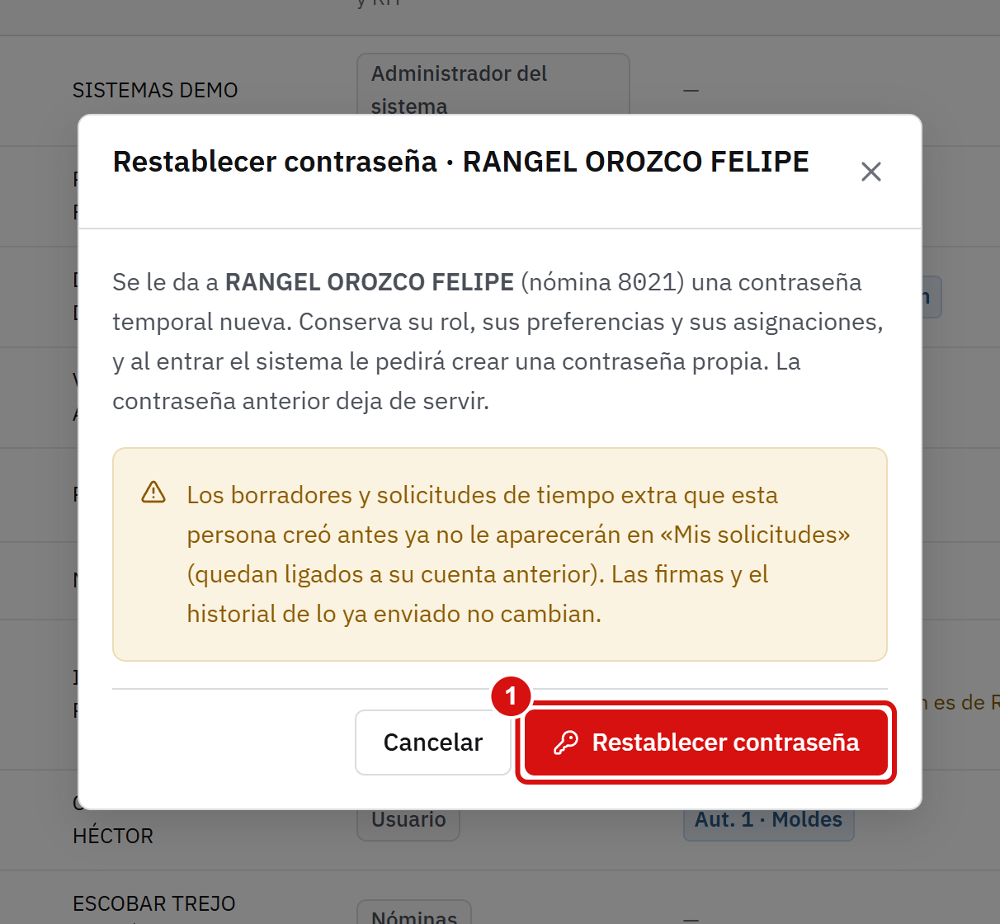
Con la llave 🔑 de la persona, confirma. El portal genera otra contraseña temporal; la ves una sola vez, igual que al crear un usuario.
Tú restableces contraseñas de usuarios y de Nóminas, nunca de otro RH ni de un administrador. Antes de restablecer, verifica a la persona en persona y con su identificación. Conserva su rol y sus asignaciones, pero los borradores y solicitudes que creó antes ya no le aparecerán en «Mis solicitudes».
Con el ojo puedes desactivar a alguien (ya no podrá entrar) o volver a activarlo.
7. Consultar y descargar
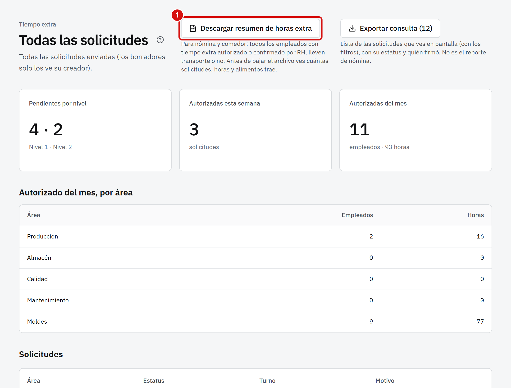
Tiempo extra muestra todas las solicitudes de la planta con filtros por área, estatus, fechas, turno y motivo. Desde aquí puedes cancelar una (con un motivo) y descargar el resumen en Excel.
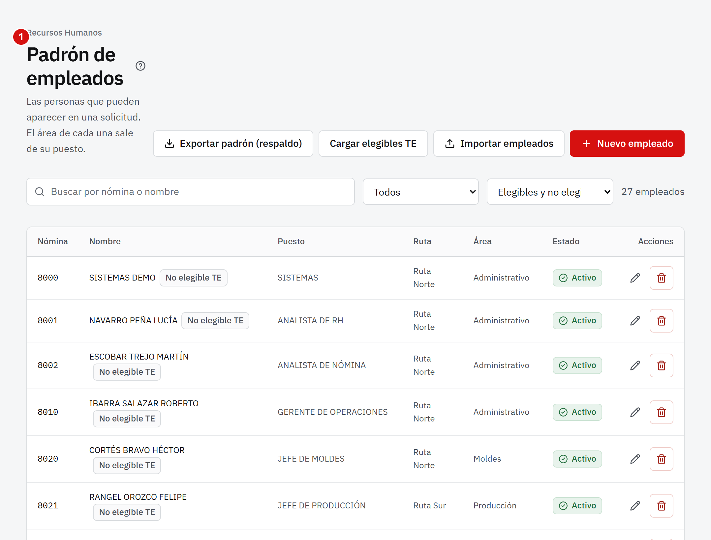
Personal es el padrón de empleados: ves a cada persona, su área, su puesto y su teléfono, y quién es elegible para tiempo extra.
Además tienes Solicitudes de transporte, Catálogos (rutas, comunidades, puntos de reunión y motivos del tiempo extra) y Estructura (áreas, puestos y turnos).
Si una semana ya la firmó Nóminas y hay que corregir algo, solo tú puedes reabrirla desde Formato de tiempo extra (Reportes de nómina).
8. Preguntas frecuentes
La persona no sale al crear su usuario.Solo salen empleados activos que aún no tienen usuario. Si falta, revisa el padrón (Personal) o usa «Capturar a mano».
Se me olvidó copiar la contraseña temporal.No se puede volver a ver. Restablece la contraseña de esa persona y entrega la nueva.
El Formato de rutas sale vacío.Aún no hay tiempo extra confirmado para esa fecha. Confirma en Por enviar al proveedor y vuelve a bajarlo.
Confirmé algo por error.Pide a Autorización 2 o cancela la solicitud con un motivo (si el transporte ya se envió al proveedor, el portal la marca para revisión).
Se cerró mi sesión.Por seguridad se cierra a los 30 minutos sin usar. Entra de nuevo; no se pierde nada de lo ya hecho.